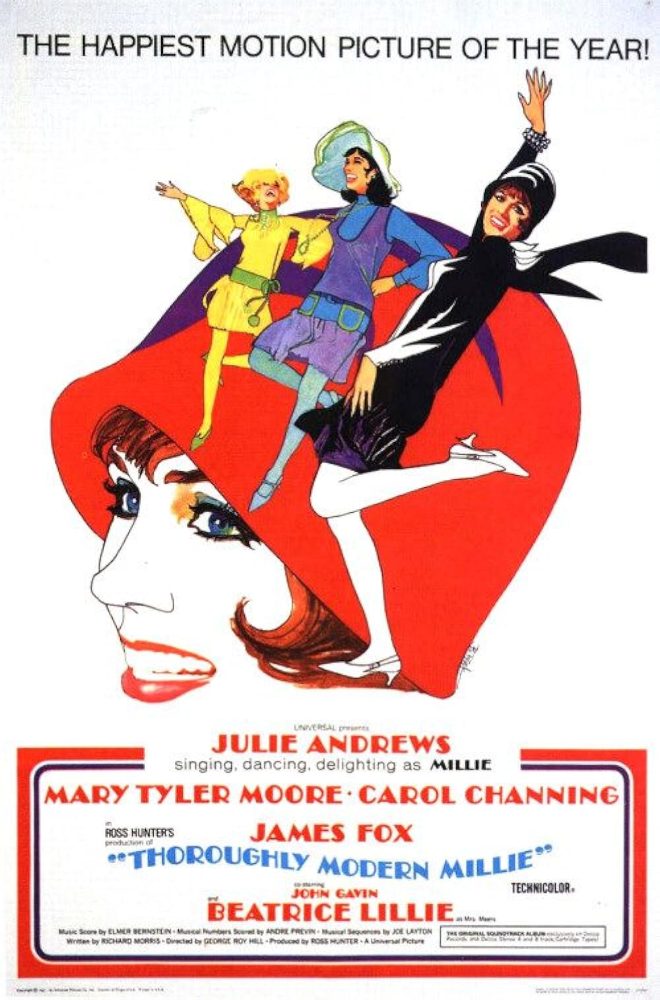

Thoroughly Modern Millie
40th Academy Awards
(Oscars 1968)
7 Nominations, 1 Award
| Nominations | ||
|---|---|---|
| Category | Nominees | Result |
| Actress in a Supporting Role | Carol Channing | Nominated |
| Art Direction | Alexander Golitzen, George C. Webb, and Howard Bristol | Nominated |
| Costume Design | Jean Louis | Nominated |
| Sound | Universal City Studio Sound Department | Nominated |
| Music (Original Music Score) | Elmer Bernstein | Won |
| Music (Scoring of Music--adaptation or treatment) | Andre Previn and Joseph Gershenson | Nominated |
| Music (Song) "Thoroughly Modern Millie" |
James Van Heusen and Sammy Cahn | Nominated |